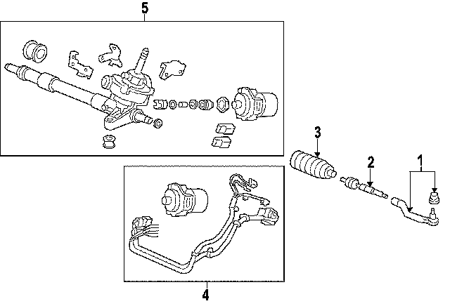
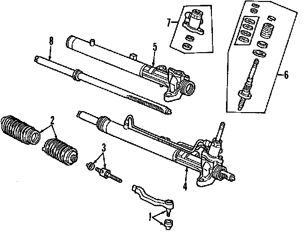
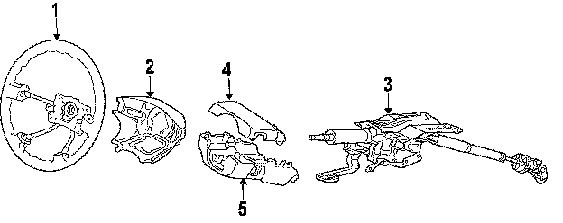

Operation CHARM
: Car repair manuals for everyone.
Home
>>
Honda
>>
2007
>>
Civic Si L4-2.0L
>>
Parts and Labor
>>
Steering and Suspension
>>
Steering
>>
Images
Images
Steering Gear, Electric:

Steering Gear, Hydraulic:

Steering Column:
